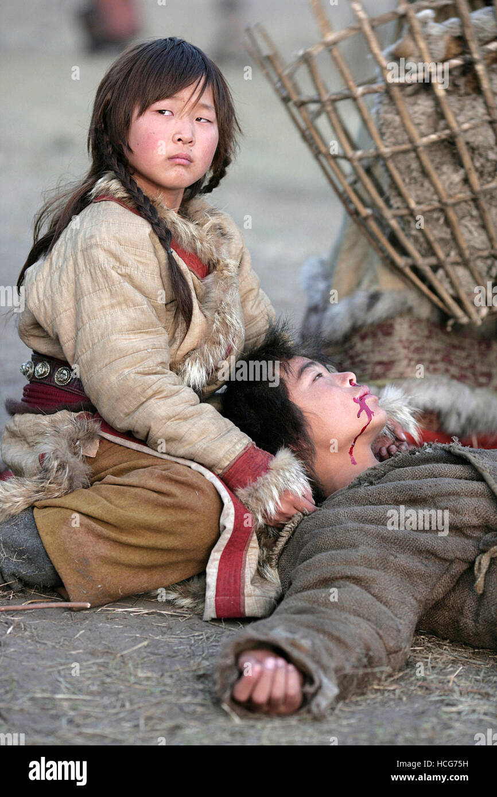
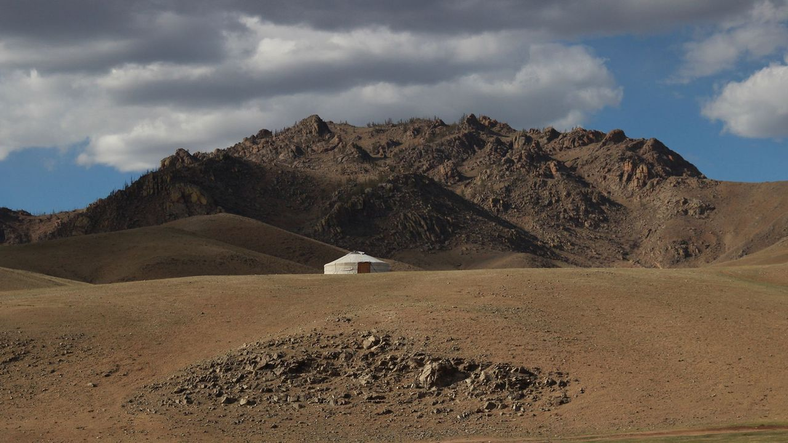

<!DOCTYPE html>
<html lang="en">
    <head>
        <meta charset="UTF-8">
        <meta name="viewport" content="width=device-width, initial-scale=1.0">
        <title>10 Things You May Not Know About Genghis Khan</title>
    </head>
</html>
<body>
    <header>
        <h1>10 Things You May Not Know About Genghis Khan</h1>
    </header>
    <main>
        <section>
            <h2>“Genghis” Wasn't His Real Name</h2>

            <p>The man who would become the “Great Khan” of the Mongols was born along the banks of the Onon River sometime around 1162 and originally named <strong>Temujin</strong>, which means “of iron” or “blacksmith.”</p>
            <a href = "https://en.wikipedia.org/wiki/Genghis_Khan">
             
            </a>
        </section>
        <section>
            <h2>He Had a Rough Childhood</h2>
            <p>From an early age, Genghis was forced to contend with the brutality of life on the Mongolian
                Steppe. Rival Tatars poisoned his father when he was only nine, and his own tribe later expelled
                his family and left his mother to raise her seven children alone. Genghis grew up hunting and
                foraging to survive, and as an adolescent he may have even murdered his own half-brother in a
                dispute over food. During his teenage years, rival clans abducted both he and his young wife, and
                Genghis spent time as a slave before making a daring escape. Despite all these hardships, by his
                early 20s he had established himself as a formidable warrior and leader. After amassing an army
                of supporters, he began forging alliances with the heads of important tribes. By 1206, he had
                successfully consolidated the steppe confederations under his banner and began to turn his
                attention to outside conquest.</p>
            <a href = "https://www.history.com/topics/asian-history/genghis-khan">
            
            </a>
        </section>
        
        <section>
            <h2>His Burial Site Remains Unknown.</h2>
            <p>The tomb is most likely on or around a Mongolian mountain called Burkhan Khaldun, but to this day its precise location is unknown.</p>
            <a href = "https://www.bbc.com/travel/article/20170717-why-genghis-khans-tomb-cant-be-found">
            
            </a>
        </section>
        
        <section>
            <h3>General Facts About Genghis Khan</h3>
            <ul>
                <li>He promoted people based on merit rather than lineage.</li>
                <li>He created one of the first international postal systems.</li>
                <li>He was responsible for the deaths of as many as 40 million people.</li>
                <li>There is no definitive record of what he looked like.</li>
           
            </ul>
        </section>
        <section>
            <h3>Learn More</h3>
            <p>For further reading on Genghis Khan, visit <a href="https://carolinaasiacenter.unc.edu/wp-content/uploads/sites/8684/2018/11/Genghis-Khan-.pdf">this link</a>.</p>
        </section>
    </main>
</body>
</html>